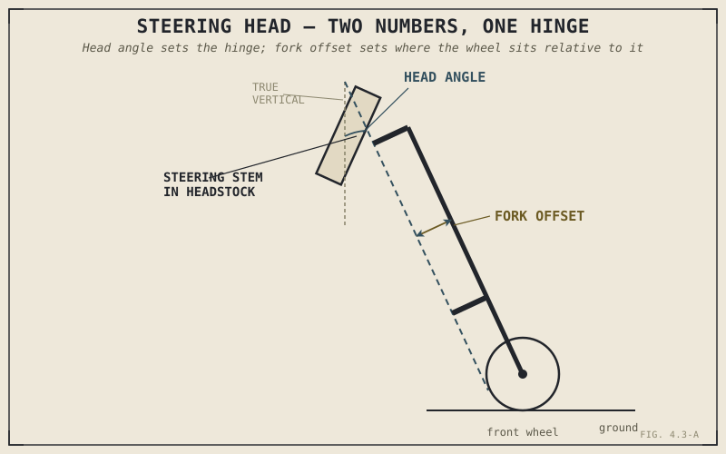

Two motorcycles can share the exact same steering head angle — the number most riders mean when they casually say "rake" — and still steer noticeably differently from each other, turning in with different urgency and holding a straight line with different confidence. If rake alone told the whole story, that wouldn't be possible. It isn't the whole story, and this chapter is about the second, quieter number working alongside it that most casual descriptions leave out entirely.
Chapter 4.1 named chassis geometry as one of three jobs the chassis performs, and Chapter 4.2 covered how the frame around that geometry gets built. This chapter turns to the specific physical junction where steering geometry actually lives — the steering head — and introduces the two measurements that, together, set up everything Chapter 4.4 will explain about rake and trail.
Where the Front End Actually Pivots
The steering head is the point where the frame meets the front end: a steering stem runs through the frame's headstock, supported by bearings that let the entire front assembly — forks, wheel, handlebars — pivot left and right as a single unit. This is the literal, physical hinge every steering input passes through, and its geometry, more than any other single structural detail on the motorcycle, determines how the front end behaves once the bike is rolling.
That geometry is described by two separate numbers, not one, and it's worth introducing both clearly before combining them.
Steering Head Angle: The Number Most People Call "Rake"
The steering stem isn't mounted perfectly vertical. It's angled backward from true vertical by a specific number of degrees, called the steering head angle, or sometimes caster angle — this is the number most casually referred to as a bike's "rake," and it's the first of the two building blocks this chapter is introducing. A steeper, more vertical steering head angle generally produces quicker, more responsive steering; a more relaxed, laid-back angle generally produces steadier, more stable steering at the cost of some quickness — a trade-off Chapter 4.4 will explain in full mechanical detail once the second number is on the table.
Fork Offset: The Quiet Second Variable
Here's the detail casual descriptions usually skip entirely: the fork tubes themselves are rarely mounted exactly in line with the steering axis running through the headstock. Instead, the triple clamps — the components clamping the fork tubes and connecting them to the steering stem — typically offset the fork tubes slightly forward of that steering axis, a measurement called fork offset, or triple clamp offset. This offset isn't a manufacturing quirk; it's a deliberate geometric choice that works together with steering head angle to determine a third measurement, trail, which Chapter 4.4 will show is actually the number most directly responsible for how a front end feels while riding.
Steering head angle sets the angle of the hinge. Fork offset sets where the wheel actually sits relative to that hinge. Neither number alone determines how the front end behaves — only the two of them together, combined into the measurement Chapter 4.4 covers next.

A steering head shown in cross-section, with the steering axis angled back from vertical labeled as the head angle, and the fork tubes offset forward of that axis labeled as fork offset.
A Common Misconception, Cleared Up Early
It's extremely common to hear a motorcycle's handling summed up by a single rake figure — "it's got a steep 23-degree rake, so it steers quickly" — as though that one number settled the matter. It doesn't, and this chapter's entire point is that two motorcycles can share an identical steering head angle while running noticeably different fork offsets, producing genuinely different trail figures and, as a direct result, different steering feel despite the identical headline rake number. This is the same warning Chapter 1.6 gave about judging a spec sheet from a single figure in isolation, applied here specifically to chassis geometry: rake by itself is an incomplete description, and treating it as the whole story misses exactly the interaction this chapter has been setting up.
Where This Leads
This chapter deliberately stopped short of explaining what steering head angle and fork offset actually produce together, or why that combination matters as much as it does to how a motorcycle steers. Chapter 4.4 picks up exactly there, combining both numbers into trail — the single measurement this book has referenced since Chapter 1.2 without ever fully explaining.
Key Concepts to Remember
- The steering head is the physical hinge, supported by bearings in the frame's headstock, that the entire front end pivots around.
- Steering head angle, often called rake, is the angle of the steering stem measured back from true vertical, and is only half of the geometry that determines front-end behaviour.
- Fork offset, or triple clamp offset, positions the fork tubes forward of the steering axis, and works together with steering head angle to determine trail.
- Two motorcycles can share an identical steering head angle but different fork offsets, producing different trail and different steering feel — rake alone never tells the complete story.
Cross-References
| ← Ch. 4.1 | Introduced chassis geometry as one of the chassis's three core jobs; this chapter identifies the steering head as where that geometry physically lives. |
| ← Ch. 1.6 | Warned against judging anything by a single spec figure in isolation; this chapter applies that warning directly to steering head angle, or rake, on its own. |
| → Ch. 4.4 | Combines this chapter's two variables — head angle and fork offset — into the complete rake and trail picture. |